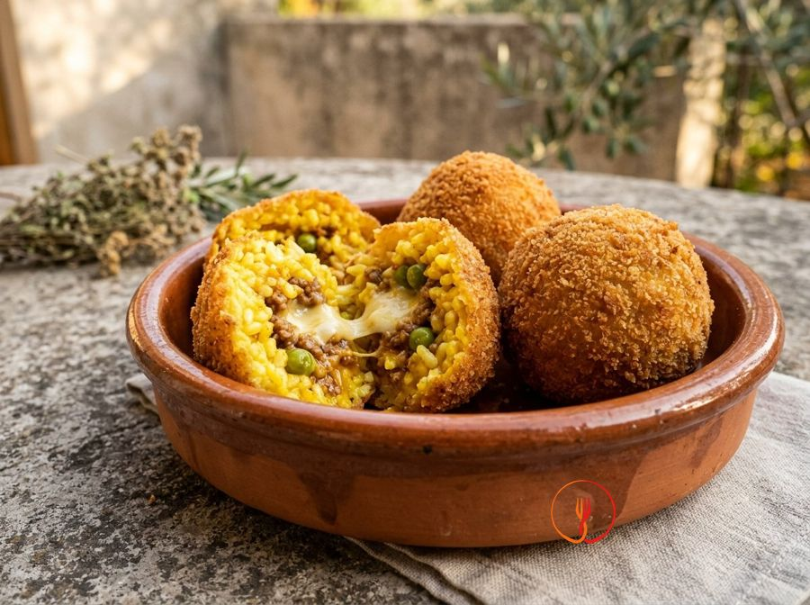

Palermo-style Arancine
Rice balls stuffed with meat sauce and peas, fried and golden brown.
Ingredients
- Arborio or Originario rice500 gr
- Saffron powder0.125 gr
- Ground beef200 gr
- Fine peas100 gr
- Aged caciocavallo cheese100 gr
- Breadcrumbs250 gr
- Eggs2
- Peanut oil1000 ml
- Butter30 gr
- Fine salt15 gr
- Yellow onion50 gr
- Tomato purée150 gr
- Dry white wine50 ml
- All-purpose flour (Type 00)150 gr
Allergens
Peanuts, Gluten, Milk, Eggs
May contain traces of: Sulphites.
Method
- Boil the rice in 1.2 liters of lightly salted water until the liquid is completely absorbed. Dissolve the saffron in a little hot water and add it to the rice along with the butter.
- Spread the rice on a large tray to let it cool completely and stabilize the starches; this will make the grains less sticky during shaping.
- Prepare the meat sauce (ragù): sauté the chopped onion, brown the ground beef, deglaze with the wine, and add the tomato purée and peas. Cook over low heat until it becomes very thick and dry.
- Cut the caciocavallo into cubes of about 1 cm. Prepare a fluid batter by mixing the flour with 250 ml of water and the eggs, whisking to avoid lumps.
- Take a portion of rice in the palm of your moistened hand, create a hollow in the center, and insert a spoonful of ragù and a few cheese cubes.
- Close the rice over the filling, shaping the arancino into a ball or a cone. Ensure there are no cracks to prevent the filling from leaking out.
- Dip each arancino into the flour and egg batter, then roll it in the breadcrumbs, pressing lightly to make them adhere well.
- Heat the peanut oil to 175°C (350°F). Fry 2-3 arancini at a time so as not to lower the temperature, until they are uniformly golden brown (about 4-6 minutes).
- Drain on paper towels and let rest for 5 minutes before serving, allowing the heat to melt the cheese core evenly.
Nutrition facts (estimate)
| Per serving (320 g) | Per 100 g | |
|---|---|---|
| Energy | 3648 kJ / 872 kcal | 1142 kJ / 273 kcal |
| Protein | 26 g | 8.3 g |
| Carbohydrates | 112 g | 35 g |
| of which sugars | 4.8 g | 1.5 g |
| Fat | 34 g | 11 g |
| of which saturates | 11 g | 3.4 g |
| Fibre | 5.2 g | 1.6 g |
| Salt | 2.6 g | 0.8 g |
AI estimates based on average CREA / USDA data: indicative only, not a substitute for medical or dietitian advice.
Open the recipe in the app for the shopping list, ingredient sheets and nearby shops.